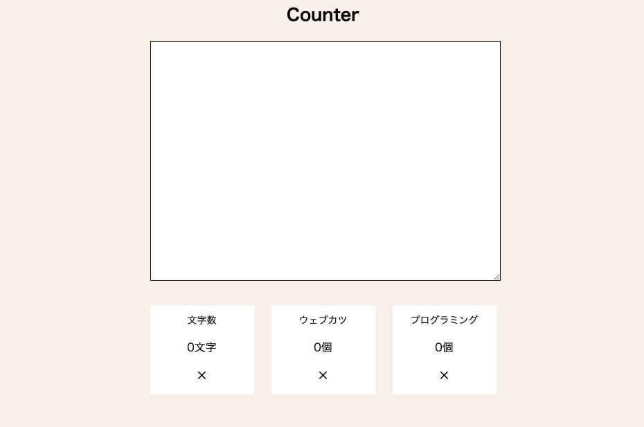
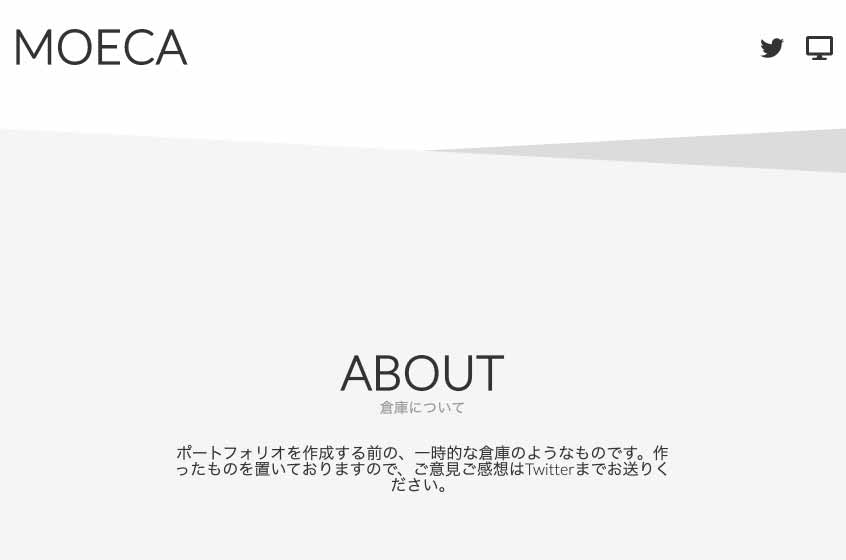
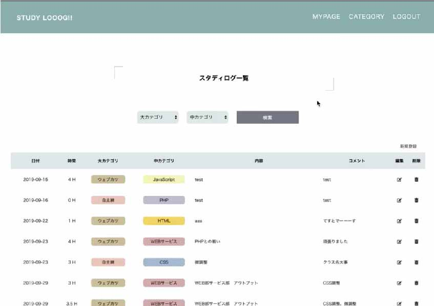
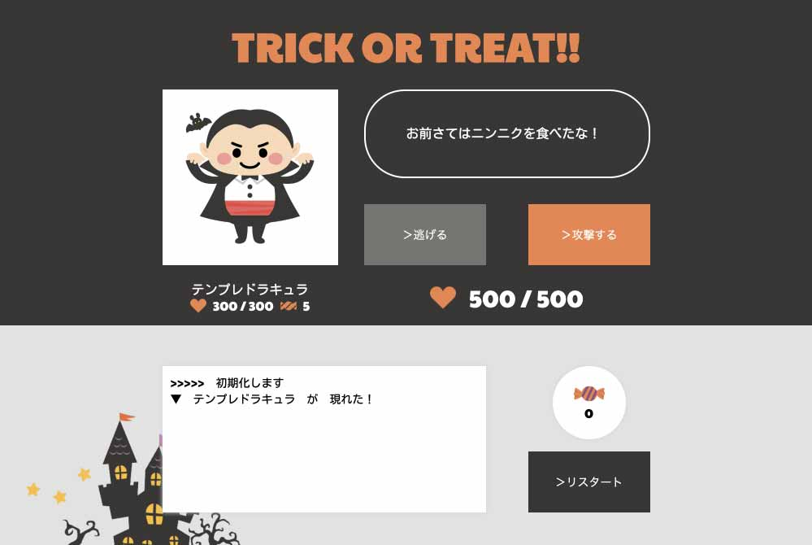
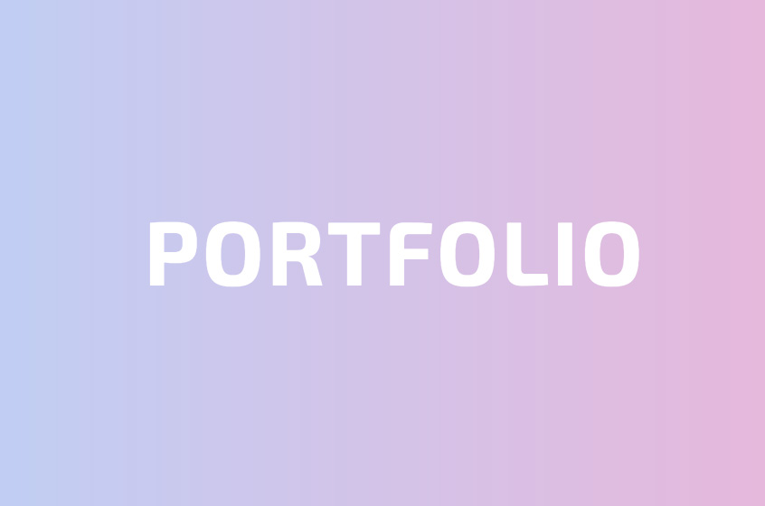

PORTFOLIO
PROFILE
名前
まさや
年齢
19歳
職業
大学生
居住地
福井県
趣味
読書
私は、現在サイバー大学(通信制大学)に通いながら、ラーメン屋さんのバイト、フリーランスとして企業のサイトを作らせて頂いております。
大学でHTMLを学び楽しかったのでそのまま独学でスキルアップしてきました。そうしていくうちに、自分のスキルを使い社会に貢献したいと思いました。知り合いの企業やクラウドソーシングなどでどんどん作りました。
就職しようと思いました。私は、すごく勉強が好きなので新しい技術などもすぐに習得します。また、コミュニケーションがとても好きなので、フリーランスの時には、クライアントとのコミュニケーションをとても大切にしていました。
コンピュータ言語、コミュニケーション能力、スキル習得、Webの構造の理解などで、企業に貢献します。必ず採用して良かったと言ってもらえるよう頑張ります。
POINT
仕事が好き
働くことは自己表現の一つだと考えています。ライフスタイルの変化があっても、生涯働きたいです。
ポジティブ
前向きな思考で、笑顔で明るくいるよう心がけています。メンタル面は安定しています。
向上心
常に学び、より良い人間でありたいと思っています。そのための努力は惜しみません。
SKILL
HTML
ぱっと見て大まかな構成が分かります
CSS
BEM設計が好きです
Sass
ブロックごとにファイルを分けて管理しています
Photoshop
簡単な画像加工ができます
JavaScript
簡単な動きをつけることができます
jQuery
フルスクラッチや、プラグインが使えます
PHP
ログイン機能、問い合わせフォームなど作れます
WordPress
自作テーマ開発や、運用などできます
XD
スマホ、PCなどのデザインを作れます
デザイン
色彩理論や、フォントなど分かります
Git/Github
Gitを用いての開発経験あります
SQL MySql
簡単な掲示板、管理画面作りました
Perl
ファイル操作を用い掲示板を作りました
Command Line
大学で基本コマンドなどを勉強しました
Java
簡単なデスクトップアプリを作りました
WORKS





制作時間
１日／２時間
概要
JavaScriptの練習のため、文字数カウンターを作成しました。
リアルタイムで文字数がカウントされ、指定用語が一定数以上入力されているか○×で判定されます。
制作時間
２日（合計10時間）
概要
「女性らしさ」をコンセプトに作成しました。
画像やトーンマナーに気をつけ、統一性のあるデザインであることを心がけました。また、ほんの少しですがjQueryで動きをつけています。
制作時間
２日（合計５時間）
概要
Twitterでアドバイスを受け、これまでアウトプットしたものを公開するページを作成しました。
画像を使わずCSSだけでどこまで表現できるかに挑戦しました。また、制作物が目立つようモノトーンで、かつシンプルになるよう気をつけました。
制作時間
14日（合計42時間）
機能
ユーザー登録、退会、ログイン、ログアウト、カテゴリ登録、勉強時間登録
概要
勉強時間を記録するWEBサービスを作成しました
初めてPHPに触れたため時間はかかりましたが、DBへの接続やテーブル結合などを身に付けることができました。
また、SassとBEM命名規則を取り入れ、保守性の高いコーディングを模索しながら作成しました。
制作時間
４日（合計13時間）
概要
攻撃、逃げる、リスタート、３つの行動ができる簡易的なブラウザゲームです。「取り組み開始から１週間以内に公開する」ことを目標とし、無事クリアできました。
単純な分ユーザーを飽きさせないようにする必要があると思い、モンスターのセリフを３種類ランダムで表示するようにした他、デザインにもこだわりました。
また、Twitterと連携することによって競争できる要素を取り入れました。多くの方に遊んでいただき、反響も大きかったです。
#あめあつめ2019
制作時間
３日（合計10時間）
概要
転職活動のため、ポートフォリオを作成しました。
「清潔感・女性らしさ」をテーマに、デザイン性だけではなく視認性が高くなるよう、PhotoShopでいくつかパターンを作って調整しました。そこからデザインカンプを作成し、調整しやすいよう全ての数値を８の倍数にしています。
コーディング時はHTML構造とCSS構造を分離することを意識しました。
jQueryでリッチな動きをつけると同時に、ページの読み込み速度やブラウザ間での差異もチェックしました。